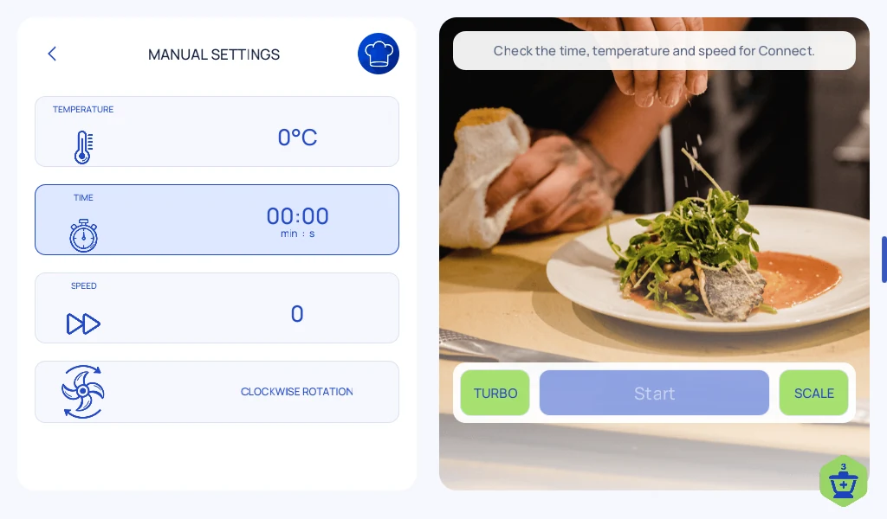
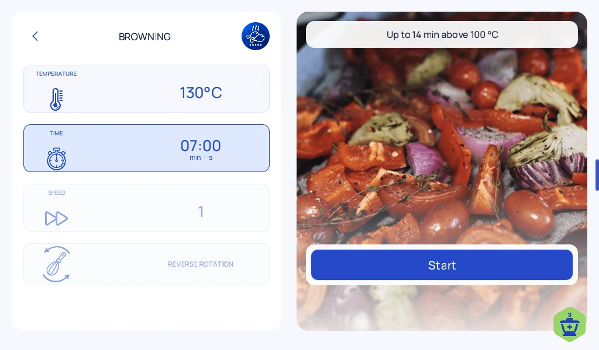
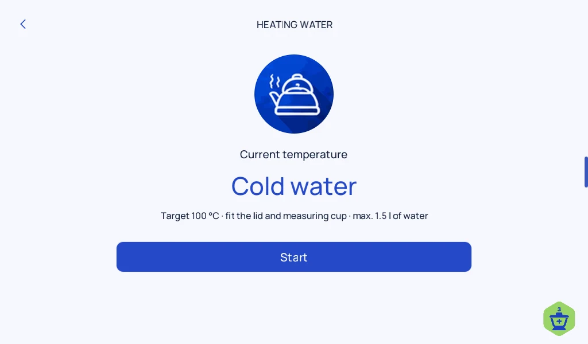
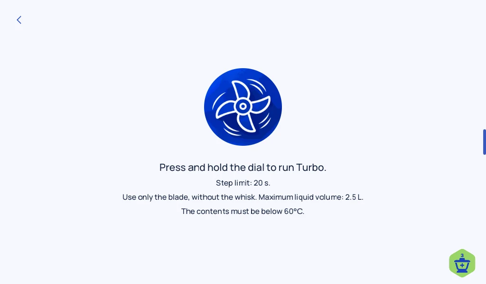
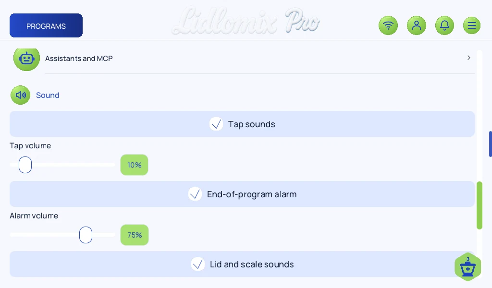

Monsieur Cuisine Connect ·
Programmes, screen and sound in 0.17.8
After the release of 0.16.4 I improved the support of the programs on Connect screen. You can see the start when setting the time, while working, you can pause, and the volume of clicks and the end signal can be listened to directly in the settings. Below, I show how the screens have changed to a robot.
Start visible when setting the time
In 0.16.4, the settings message could go under the buttons. I moved the clues higher, and with the columns of minutes and seconds I added vertical arrows. In temperature and speed editors, the horizontal arrow shows the direction of moving. Current time remains in the left field of the program.

In programs that support pause after pressing Start appears Pause, and under it Stop. After pause, you can resume the cycle from the stop. The action bar is aligned to the last field on the left. At a limited height, priority is given to buttons. In Steam Cooking, the Heat switch before counting is located directly above Start.

Pressing, Baking, Washing and Heating of Water
- The kneading starts with a set of 2:00 instead of 0:45.
- Baking by default selects 130°C. Above 100°C you can set up to 14 minutes and at 100°C or less to 30 minutes. The change in temperature retains the interval of this program, i.e. 5 seconds of blade operation and 30 seconds of break on the tested Connect.
- Washing the container has a third mode, thorough cleaning. The first stage lasts 40 minutes at 60°C and 2 to the right. The screen then asks you to replace the water and confirm a short rinse cycle.
- The water heating again shows the kettle icon and the current temperature reading. When reading below the measurement range, the screen displays “cold water”.



Turbo, Weight and clearer icons
Turbo has a bigger icon, one middle button and a hint underneath it. Maintaining the physical knob runs the Turbo only on the active Turbo screen. Letting go of the knob stops the engine. From the shortcut you can still return to the current program or recipe.

Temperature, time, speed and direction of rotation have a common axis of value. On the left, signatures and icons are aligned with each other. Interface texts use Manrope cut with Polish characters. The icons with the program names rose from 32 to 48 pixels, and the floating tool button by 30%. One large icon and a clearer reading message remained on the Weight screen.

Clicks and end signal
In Settings → Sound can be individually turned on taps and alarms, as well as setting their volume from 0 to 100%. Once the slider is released, a sample with the selected volume can be heard. Another listening alarm replaces the previous one. Default values in 00.17.8 are 10% for taps and 80% for alarms. The alarm is played once after the program's natural end.

Back to the selection of the application after starting the robot
Connect 0.9 module restores fast start navigation service after the robot is switched on and after module upgrades. After the reboot, Android put off the navigation start while Firefox was still waiting in line. I checked both paths on the device after the reboot. Drag the handle from the right edge to the left returns to the selection screen both with Lidlomix Pro and with the factory application Monsieur Cuisine.

List of changes from 0.16.4
- 0.16.4 — Full Screens of Scales, Turbo and Shortcut Wash, and return to the current program or recipe step. Previous discharge entry.
- 0.16.5 — Add a ground cleaning with rinse after confirmation and restore the water heating screen.
- 0.16.6 — Adjustments to the rice washing and cooking modes and the ‘cold water’ message.
- 0.16.7 — Start, Pause, Resume, and Stop in pause support programs, 2 minutes in kneading, and longer cooking time after lowering the temperature.
- 0.16.8 — visible Start during editing, overlaying, heating next to Start and handling the knob on the Turbo screen.
- 0.16.9 — wider Start in program bars, larger rotational icon, and moving Turbo support lower.
- 0.16.10 — centered Turbo screen with a larger icon and one group of tips.
- 0.16.11 — lower edge of the action bar aligned with the last parameter field.
- 0.16.12 — time and speed directional inscriptions.
- 0.16.13 — common axes of icons and signatures, cut Manrope and a clearer display of scales.
- 0.16.14 — arrow keys and larger gesture hints in time, temperature and speed selectors.
- 0.16.15 / 00.17.5 — header icons bigger by 50%, floating tools larger by 30% and one icon on the Weight. The release received number 00.17.5 after the numbering was arranged.
- Connect 0.9 module — earlier running back gesture support at robot startup and automatic start after module upgrade.
- 00.17.6 — clicks, one-time end-of-program alarm and separate switches and sliders.
- 00.17.7 — bigger selection and listening boxes after the slide is released, with default alarm volume 80%.
- 00.17.8 — Default tap volume reduced to 10%.
Tested on Connect
On the job, I checked the Start visibility in editors, run and stop the Turbo knob, return with a gesture from both applications after reboot, and play a click and one alarm after a short cycle. I also checked that the release of both sliders produces a sample with the selected volume.